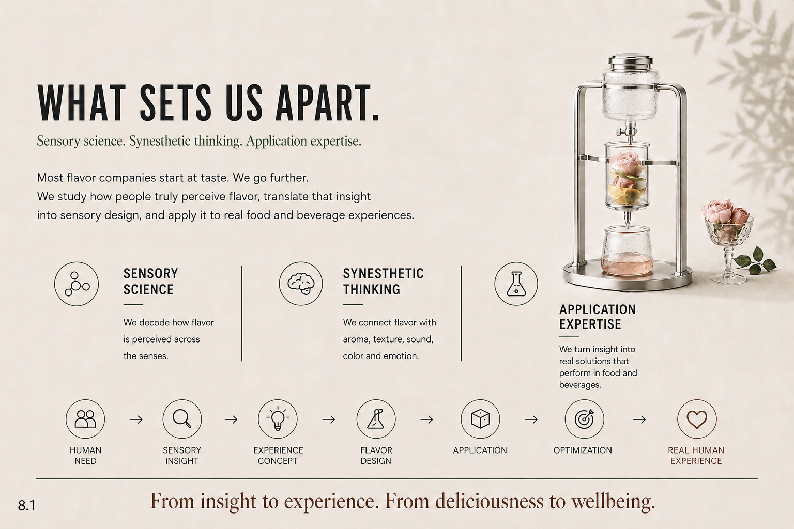
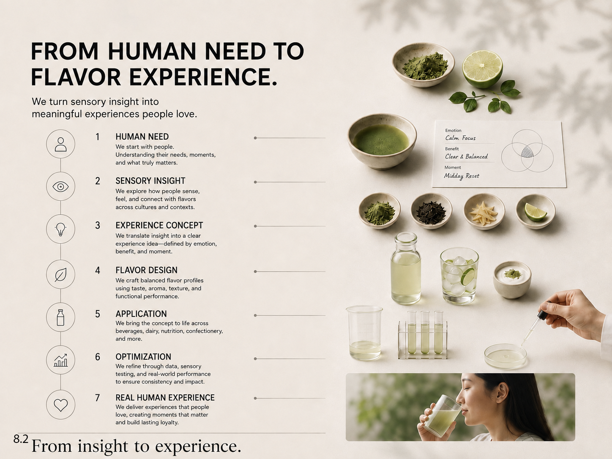
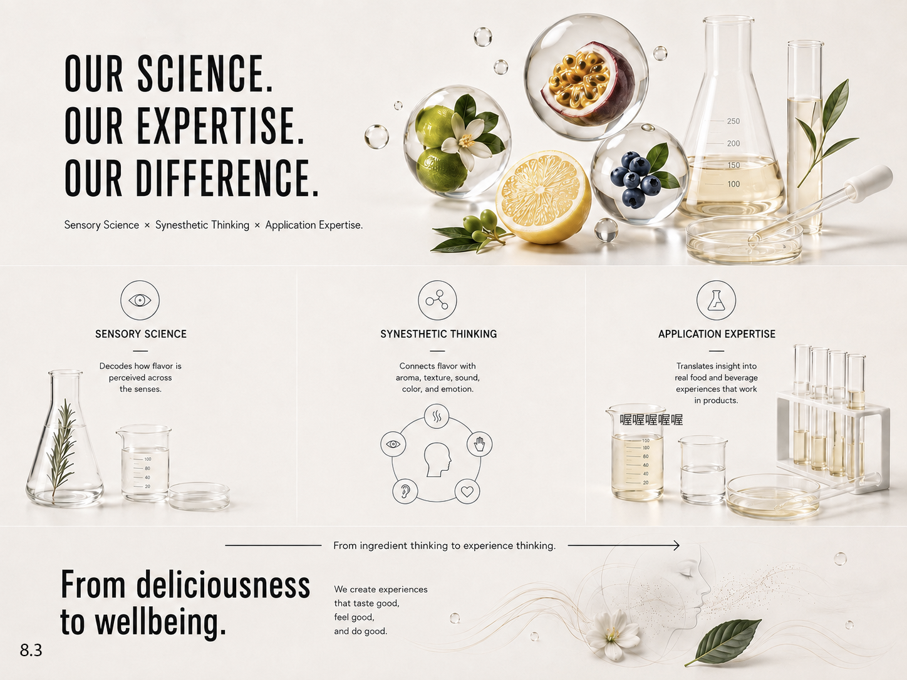
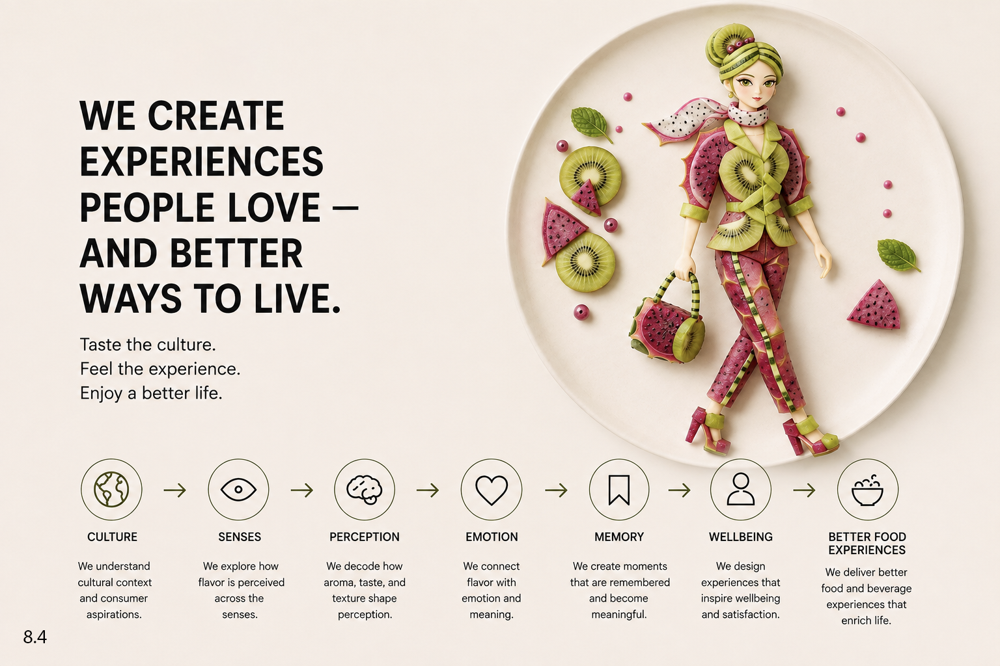

Sensory science
We decode how flavor is perceived across the senses.
Create flavors
Sensory science. Synesthetic thinking. Application expertise.
Most flavor companies start at taste. We go further.
We study how people truly perceive flavor, translate that insight into sensory design, and apply it to real food and beverage experiences.

We decode how flavor is perceived across the senses.
We connect flavor with aroma, texture, sound, color and emotion.
We turn insight into real solutions that perform in food and beverages.
From insight to experience.
From deliciousness to wellbeing.
From insight to experience
We turn sensory insight into meaningful experiences people love.
We start with people. Understanding their needs, moments, and what truly matters.
We explore how people sense, feel, and connect with flavors across cultures and contexts.
We translate insight into a clear experience idea, defined by emotion, benefit, and moment.
We craft balanced flavor profiles using taste, aroma, texture, and functional performance.
We bring the concept to life across beverages, dairy, nutrition, confectionery, and more.
We refine through data, sensory testing, and real-world performance to ensure consistency and impact.
We deliver experiences that people love, creating moments that matter and build lasting loyalty.

Our approach
Sensory Science × Synesthetic Thinking × Application Expertise.

Decodes how flavor is perceived across the senses.
Connects flavor with aroma, texture, sound, color, and emotion.
Translates insight into real food and beverage experiences that work in products.
From ingredient thinking to experience thinking.
We create experiences that taste good,
feel good, and do good.
Better food experiences
Taste the culture.
Feel the experience.
Enjoy a better life.

We understand cultural context and consumer aspirations.
We explore how flavor is perceived across the senses.
We decode how aroma, taste, and texture shape perception.
We connect flavor with emotion and meaning.
We create moments that are remembered and become meaningful.
We design experiences that inspire wellbeing and satisfaction.
We deliver better food and beverage experiences that enrich life.